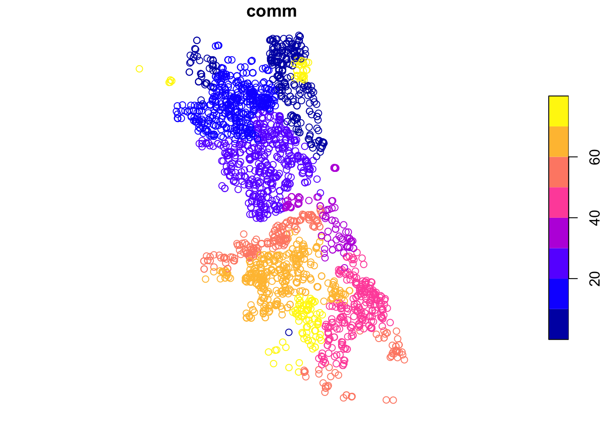
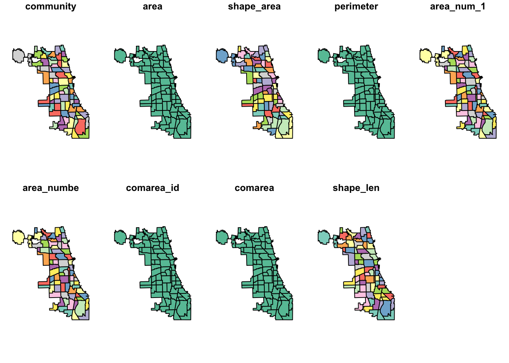
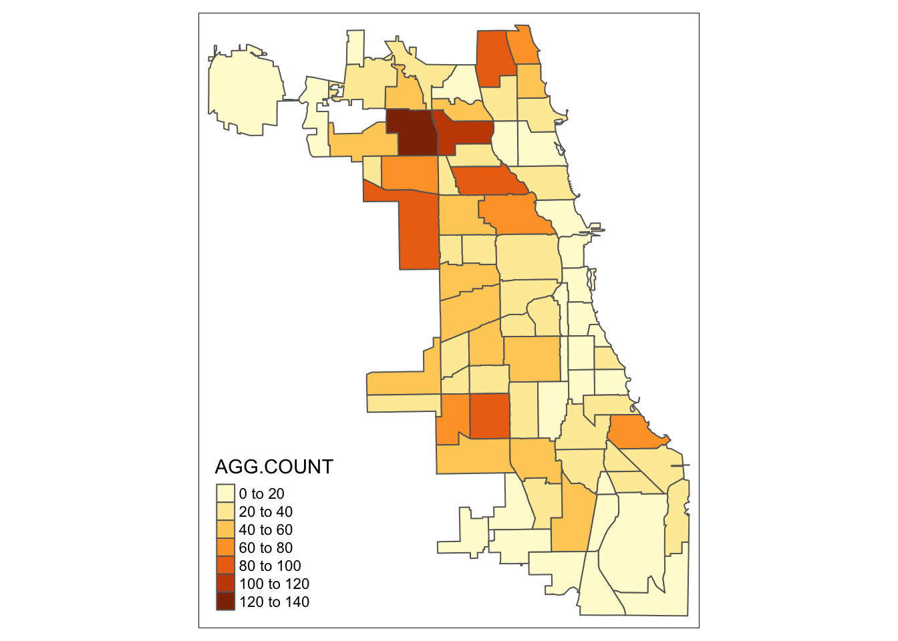
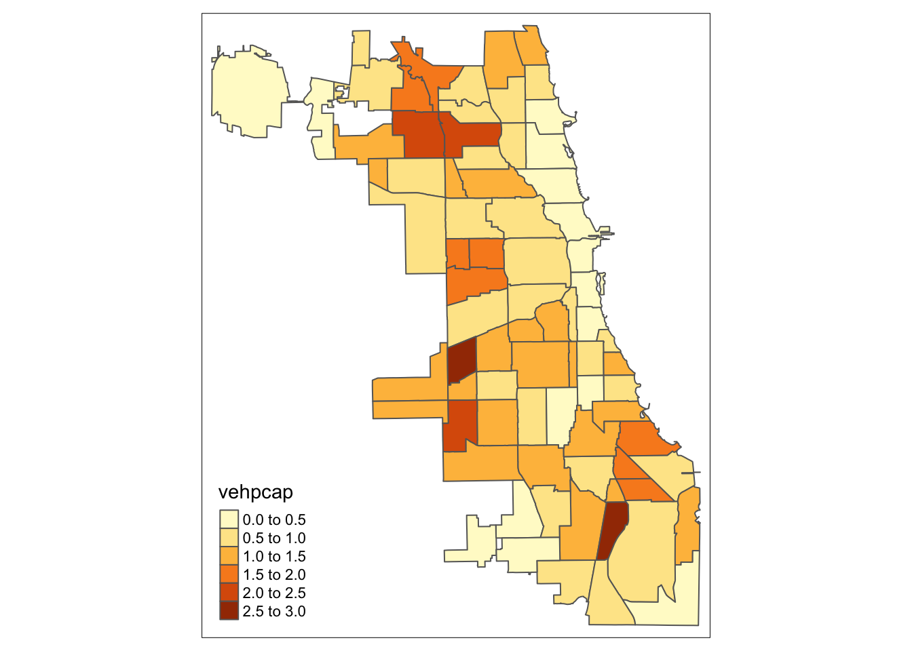

This R notebook covers the functionality of the Spatial Data Handling section of the GeoDa workbook. We refer to that document for details on the methodology, references, etc. The goal of these notes is to approximate as closely as possible the operations carried out using GeoDa by means of a range of R packages.
The notes are written with R beginners in mind, more seasoned R users can probably skip most of the comments on data structures and other R particulars. Also, as always in R, there are typically several ways to achieve a specific objective, so what is shown here is just one way that works, but there often are others (that may even be more elegant, work faster, or scale better).
In this lab, we will use the City of Chicago open data portal to download data on abandoned vehicles. Our end goal is to create a choropleth map with abandoned vehicles per capita for Chicago community areas. Before we can create the maps, we will need to download the information, select observations, aggregate data, join different files and carry out variable transformations in order to obtain a so-called “spatially intensive” variable for mapping (i.e., not just a count of abandoned vehicles, but a per capita ratio).
After completing the notebook, you should know how to carry out the following tasks:
Download data from any Socrata-driven open data portal, such as the City of Chicago open data portal
Filtering a data frame for specific entries
Selecting and renaming columns
Creating a simple features spatial object
Checking and adding/adjusting projection information
Dealing with missing data
Spatial join
Spatial aggregation
Parsing a pdf file
Merging data sets
Creating new variables
Basic choropleth mapping
RSocrata: to read data directly from a Socrata powered open data portal, such as the Chicago open data portal
tidyverse (includes dplyr): to manipulate data frames, such as filtering data, selecting columns, and creating new variables
lubridate: to select information out of the date format when filtering the data
sf: to create and manipulate simple features spatial objects, to read in the boundary file, and perform point in polygon on the data set to fill in missing community area information
pdftools: to read and parse a pdf for chicago community area population information
tmap: to make nice looking choropleth maps
Below follows a list of the commands used in this notebook. For further details and a comprehensive list of options, please consult the R documentation.
base R: install.packages, library, head, dim, class, as.Date, names, !is.na, is.numeric, as.integer, is.integer, length, strsplit, unlist, for, vector, substr, gsub, as.numeric, data.frame
RSocrata: read.socrata
tidyverse: filter, %>% (pipe), select (with renaming), count, rename, mutate
lubridate: year, month
sf: st_as_sf, plot, st_crs, read_sf, st_transform, st_join, st_geometry, st_write
pdftools: pdf_text
tmap: tm_shape, tm_polygons
Before starting, make sure to have the latest version of R and of packages that are compiled for the matching version of R (this document was created using R 3.5.1 of 2018-07-02). Also, optionally, set a working directory, even though we will not actually be saving any files.2
First, we load all the required packages using the library command. If you don’t have some of these in your system, make sure to install them first as well as their dependencies.3 You will get an error message if something is missing. If needed, just install the missing piece and everything will work after that.
library(tidyverse)## ── Attaching packages ───────────────────────────────────────────────── tidyverse 1.2.1 ──## ✔ ggplot2 3.0.0 ✔ purrr 0.2.5
## ✔ tibble 1.4.2 ✔ dplyr 0.7.6
## ✔ tidyr 0.8.1 ✔ stringr 1.3.1
## ✔ readr 1.1.1 ✔ forcats 0.3.0## ── Conflicts ──────────────────────────────────────────────────── tidyverse_conflicts() ──
## ✖ dplyr::filter() masks stats::filter()
## ✖ dplyr::lag() masks stats::lag()library(lubridate)##
## Attaching package: 'lubridate'## The following object is masked from 'package:base':
##
## datelibrary(sf)## Linking to GEOS 3.6.1, GDAL 2.1.3, proj.4 4.9.3library(tmap)
library(pdftools)
library(RSocrata)We will use the specialized RSocrata package to download the file with 311 calls about abandoned vehicles from the City of Chicago open data portal. A list of different types of 311 nuisance calls is given by selecting the button for Service Requests. The abandoned vehicles data are contained in the entry for 311 Service Requests - Abandoned Vehicles.
Select the API button and copy the API Endpoint from the interface. This is the target file that we will download using the read.socrata function from the RSocrata package. Note, this is a large file, so it may take a while to download.
First, we set the target file name to pass to the read.socrata function. Copy the API Endpoint and paste the file path, as shown below.
socrata.file <- "https://data.cityofchicago.org/resource/suj7-cg3j.csv"Next, download the file using read.socrata. This will turn the data into an R data frame. After the download is completed, we use the head command to get a sense of the contents of the data frame.
vehicle.data <- read.socrata(socrata.file)
head(vehicle.data)## community_area completion_date creation_date current_activity
## 1 NA 2012-01-05 2012-01-04 FVI - Outcome
## 2 NA 2013-02-21 2013-01-22 FVI - Outcome
## 3 38 2013-02-20 2013-01-13 FVI - Outcome
## 4 NA 2012-02-15 2012-01-24 FVI - Outcome
## 5 NA 2011-01-28 2011-01-25
## 6 28 2011-02-03 2011-01-28
## how_many_days_has_the_vehicle_been_reported_as_parked_ latitude
## 1 45 NA
## 2 NA NA
## 3 10 NA
## 4 NA NA
## 5 7 NA
## 6 NA NA
## license_plate location location_address location_city location_state
## 1 NONE <NA> <NA> <NA>
## 2 <NA> <NA> <NA>
## 3 NO PLATES <NA> <NA> <NA>
## 4 <NA> <NA> <NA>
## 5 K476451 <NA> <NA> <NA>
## 6 ? <NA> <NA> <NA>
## location_zip longitude most_recent_action
## 1 <NA> NA Vehicle was moved from original address requested
## 2 <NA> NA Vehicle was moved from original address requested
## 3 <NA> NA Vehicle was moved from original address requested
## 4 <NA> NA Vehicle was moved from original address requested
## 5 <NA> NA
## 6 <NA> NA
## police_district service_request_number ssa status
## 1 NA 12-00013378 NA Completed
## 2 NA 13-00079210 NA Completed - Dup
## 3 2 13-00048686 NA Completed
## 4 NA 12-00100994 NA Completed
## 5 NA 11-00116331 NA Completed
## 6 12 11-00139829 NA Completed
## street_address type_of_service_request
## 1 103 E 8TH ST Abandoned Vehicle Complaint
## 2 2030 79 PLACE Abandoned Vehicle Complaint
## 3 5015 S DR MARTIN LUTHER KING JR SD Abandoned Vehicle Complaint
## 4 1325 S ADA ST Abandoned Vehicle Complaint
## 5 5804 N MENARD AVE Abandoned Vehicle Complaint
## 6 116 S JACKSON BL ER Abandoned Vehicle Complaint
## vehicle_color vehicle_make_model ward x_coordinate y_coordinate zip_code
## 1 Beige Oldsmobile NA NA NA 60605
## 2 NA NA NA NA
## 3 Black Legacy Unknown 3 NA NA 60615
## 4 NA NA NA 60607
## 5 Black Honda NA NA NA 60630
## 6 Yellow 2 1171572 1899604 60661A quick glance at the table reveals quite a bit of missing information, something we will have to deal with. We also check the dimension of this data frame using the dim command:
dim(vehicle.data)## [1] 201299 26The table has 200,657 observations on 26 variables (the number of observations may be different as the table is constantly updated).
In RStudio, the type of the variable in each column is listed under its name. For example, under creation_date, we see S3: POSIXct. You can also find out the same information by applying a class command to the variable vehicle.data$creation_date, as in
class(vehicle.data$creation_date)## [1] "POSIXct" "POSIXt"The result again yields POSIXct, which is a common format used for dates.
Note that RSocrata is able to tell the date format from a simple string. In contrast, if we had downloaded the file manually as a csv (comma separated value) file, this would not be the case (see the GeoDa example). In that instance, we would have to convert the creation_date to a date format explicitly using as.Date.
As in the GeoDa example, we are not using all the data, but will analyze the abandoned vehicle locations for a given time period, i.e., the month of September 2016.
To extract the observations for the selected year (2016) and month (9), we will use the year and month functions from the lubridate package. We will embed these expressions in a filter command (from tidyverse) to select the rows/observations that match the specified criterion. We will also use the pipe command %>% to move the original data frame through the different filter stages and assign the end result to vehicle.sept16.
We again check the contents with a head command.
vehicle.sept16 <- vehicle.data %>% filter(year(creation_date) == 2016) %>%
filter(month(creation_date) == 9)
head(vehicle.sept16)## community_area completion_date creation_date current_activity
## 1 22 2016-11-01 2016-09-25 FVI - Outcome
## 2 32 2016-11-07 2016-09-23 FVI - Outcome
## 3 64 2016-10-31 2016-09-30 FVI - Outcome
## 4 49 2016-09-28 2016-09-27
## 5 25 2016-10-14 2016-09-03 FVI - Outcome
## 6 64 2016-09-29 2016-09-06 FVI - Outcome
## how_many_days_has_the_vehicle_been_reported_as_parked_ latitude
## 1 1 NA
## 2 21 NA
## 3 8 41.78189
## 4 14 41.71969
## 5 7 41.90927
## 6 21 41.78164
## license_plate location location_address
## 1 NONE <NA>
## 2 X398759 <NA>
## 3 Q282507 POINT (-87.766910544794 41.781887757489) <NA>
## 4 436WLH POINT (-87.628471073301 41.71969458189) <NA>
## 5 U68531 POINT (-87.800436094685 41.909265922613) <NA>
## 6 S75 7913 POINT (-87.771883753544 41.781638748788) <NA>
## location_city location_state location_zip longitude
## 1 <NA> <NA> <NA> NA
## 2 <NA> <NA> <NA> NA
## 3 <NA> <NA> <NA> -87.76691
## 4 <NA> <NA> <NA> -87.62847
## 5 <NA> <NA> <NA> -87.80044
## 6 <NA> <NA> <NA> -87.77188
## most_recent_action police_district
## 1 Vehicle was moved from original address requested 14
## 2 Vehicle was moved from original address requested 1
## 3 Vehicle was moved from original address requested 8
## 4 5
## 5 Vehicle was moved from original address requested 25
## 6 Create Work Order 8
## service_request_number ssa status street_address
## 1 16-06763758 NA Completed 2601 W LOGAN SD
## 2 16-06728705 NA Completed 1136 S DELANO CT
## 3 16-06891657 NA Completed 6052 S MENARD AVE
## 4 16-06821236 NA Completed - Dup 9603 S WENTWORTH AVE
## 5 16-06253616 NA Completed 1608 N SAYRE AVE
## 6 16-06319591 NA Completed 6004 W 61ST ST
## type_of_service_request vehicle_color vehicle_make_model ward
## 1 Abandoned Vehicle Complaint Blue Chevrolet 32
## 2 Abandoned Vehicle Complaint Red Toyota 25
## 3 Abandoned Vehicle Complaint White Chevrolet 13
## 4 Abandoned Vehicle Complaint Black Hyundai 21
## 5 Abandoned Vehicle Complaint White Mercedes 29
## 6 Abandoned Vehicle Complaint Gray Mazda 13
## x_coordinate y_coordinate zip_code
## 1 1158574 1917279 60647
## 2 1175169 1895252 60605
## 3 1138768 1863842 60638
## 4 1176639 1841268 60628
## 5 1129346 1909917 60707
## 6 1137405 1863480 60638and the dimension:
dim(vehicle.sept16)## [1] 2637 26The filtered table now only has 2,637 observations.
The current data frame contains 26 variables. Several of these are not really of interest to us, since we basically want the locations of the events. We will use the select command from tidyverse to pick out the columns that we want to keep. In addition, we will use the rename option in select to give new variable names. While this is not absolutely necessary at this stage (RSocrata has turned any weird variable names into proper R names), we may later want to save the data as a point shape file. The data associated with a shape file are store in a separate dBase file, and dBase only allows 10 characters for variable names.
So, in order to save ourselves some work later on, we will rename the selected variables to strings that do not exceed 10 characters.
First, we check the variable names using the names command.
names(vehicle.sept16)## [1] "community_area"
## [2] "completion_date"
## [3] "creation_date"
## [4] "current_activity"
## [5] "how_many_days_has_the_vehicle_been_reported_as_parked_"
## [6] "latitude"
## [7] "license_plate"
## [8] "location"
## [9] "location_address"
## [10] "location_city"
## [11] "location_state"
## [12] "location_zip"
## [13] "longitude"
## [14] "most_recent_action"
## [15] "police_district"
## [16] "service_request_number"
## [17] "ssa"
## [18] "status"
## [19] "street_address"
## [20] "type_of_service_request"
## [21] "vehicle_color"
## [22] "vehicle_make_model"
## [23] "ward"
## [24] "x_coordinate"
## [25] "y_coordinate"
## [26] "zip_code"To keep things simple, we will only keep community_area, latitude and longitude, and turn them into comm, lat and lon. The new data set is vehicles.final. Note that to rename a variable, the new name is listed first, on the left hand side of the equal sign, and the old name is on the right hand side. We check the result with the head command.
vehicles.final <- vehicle.sept16 %>% select(comm = community_area,
lat = latitude, lon = longitude)
head(vehicles.final)## comm lat lon
## 1 22 NA NA
## 2 32 NA NA
## 3 64 41.78189 -87.76691
## 4 49 41.71969 -87.62847
## 5 25 41.90927 -87.80044
## 6 64 41.78164 -87.77188So far, we have only dealt with a regular data frame, without taking advantage of any spatial features. However, the data frame contains fields with coordinates and R can turn these into an explicit spatial points layer that can be saved in a range of GIS formats. To accomplish this, we will use the (new) simple features or sf package functionality, which improves upon the older sp.
We will first use the lat and lon columns in the data frame to create a spatial points object. Note that lon is the x-coordinate and lat is the y-coordinate.
In sf, a simple features object is constructed by combining a geometry with the actual data (in a data frame). However, this is simplified for point objects when the data frame contains the coordinates as variables. This is the case in our example, where we have latitude and longitude. We also have x and y, but since we are not sure what projection these coordinates correspond with, they are not useful at this stage.
The advantage of lat-lon is that they are decimal degrees, and thus unprojected. However, we can provide the information on the datum, typically WGS84 (the standard used in most applications for decimal degrees) by passing the coordinate reference system argument (crs) set to the EPSG code 4326. After that, we can use the built-in projection transformation functionality in sf to turn the points into any projection we want.4
In order to create a points layer, we need coordinates for every observation. However, as we can see from the head command above, there are (at least) two observations that do not have lat-lon information. Before we can proceed, we need to remove these from the data frame.
We again use a filter command, but now combine it with the !is.na expression, i.e., is not missing (na). We take a little short cut by assuming that if one of lat or lon is missing, the other one will be missing as well (although to keep it completely general, we would need to check each variable separately). We assign the result to the vehicle.coord data frame.
vehicle.coord <- vehicles.final %>% filter(!(is.na(lat)))
dim(vehicle.coord)## [1] 2635 3As it turns out, the two rows we noticed above were the only two with missing coordinates (the number of rows went from 2,637 to 2,635).
The sf package turns a non-spatial object like a data frame into a simple features spatial object by means of the st_as_sf function. This function can take a large number of arguments, but for now we will only use a few:
the name of the data frame, i.e., vehicle.coord
coords: the variable names for x and y (given in parentheses)
crs: the coordinate reference system, here using the EPSG code of 4326
agr: the so-called attibute-geometry-relationship which specifies how the attribute information (the data) relate to the geometry (the points); in our example, we will use “constant”
In our example, we create vehicle.points and check its class.
vehicle.points = st_as_sf(vehicle.coord, coords = c("lon", "lat"), crs = 4326, agr = "constant")
class(vehicle.points)## [1] "sf" "data.frame"Even though it is not that informative at this stage, we can also make a quick plot. Later, we will see how we can refine these plots using the tmap package.
plot(vehicle.points)
We can also do a quick check of the projection information using the st_crs command.
st_crs(vehicle.points)## Coordinate Reference System:
## EPSG: 4326
## proj4string: "+proj=longlat +datum=WGS84 +no_defs"The proj4string is a slightly more informative description than the simple EPSG code and confirms the data are not projected (longlat) using the WGS84 datum for the decimal degree coordinates.
At this point, we will go about things in a slightly different way from how they are illustrated in the GeoDa workbook example. As it turns out, some of the points have missing community area information, which is a critical element to compute the number of abandoned cars at that scale. In GeoDa, we used a visual approach to obtain the missing information. Here, we will exploit some of the GIS functionality in sf to carry out a spatial join. This boils down to identifying which points belong to each community area (a so-called point in polygon query) and assigning the corresponding community area identifier to each point.
We proceed in three steps. First, we create a simple features spatial polygon object with the boundaries of the community areas, which we download from the Chicago Open Data portal. Next, we carry out a spatial join between our points object and the polygon object to assing a community area code to each point. Finally, we compute the point count by community area.
We resort to the City of Chicago open data portal for the boundary file of the community areas. From the opening screen, select the button for Facilities & Geo Boundaries. This yields a list of different boundary files for a range of geographic areal units. The one for the community areas is Boundaries - Community Areas (current). This brings up an overview map of the geography of the community areas of Chicago. Of course, we could simply select one of the export buttons to download the files, but we want to do this programmatically. As it turns out, sf can read a geojson formatted file directly from the web, and we will exploit that functionality.
First, we need the name for the file. We can check the Socrata API file name, but that contains a json file, and we want a specific geojson file. As it turns out, the latter is simply the same file name, but with the geojson file extension. We set our variable comm.file to this URL and then use sf_read to load the boundary information into chicago.comm. As before, we can do a quick check of the class using the class command.
comm.file <- "https://data.cityofchicago.org/resource/igwz-8jzy.geojson"
chicago.comm <- read_sf(comm.file)
class(chicago.comm)## [1] "sf" "tbl_df" "tbl" "data.frame"In addition, we check the projection information using st_crs.
st_crs(chicago.comm)## Coordinate Reference System:
## EPSG: 4326
## proj4string: "+proj=longlat +datum=WGS84 +no_defs"Again, the layer is unprojected in decimal degrees. Also, a quick plot. Note that, by default, sf draws a choropleth map for each variable included in the data frame. Since we won’t be using sf for mapping, we ignore that aspect for now.
plot(chicago.comm)
We also use head to check on the types of the variables.
head(chicago.comm)## Simple feature collection with 6 features and 9 fields
## geometry type: MULTIPOLYGON
## dimension: XY
## bbox: xmin: -87.7069 ymin: 41.79448 xmax: -87.58001 ymax: 41.99076
## epsg (SRID): 4326
## proj4string: +proj=longlat +datum=WGS84 +no_defs
## # A tibble: 6 x 10
## community area shape_area perimeter area_num_1 area_numbe comarea_id
## <chr> <chr> <chr> <chr> <chr> <chr> <chr>
## 1 DOUGLAS 0 46004621.… 0 35 35 0
## 2 OAKLAND 0 16913961.… 0 36 36 0
## 3 FULLER P… 0 19916704.… 0 37 37 0
## 4 GRAND BO… 0 48492503.… 0 38 38 0
## 5 KENWOOD 0 29071741.… 0 39 39 0
## 6 LINCOLN … 0 71352328.… 0 4 4 0
## # ... with 3 more variables: comarea <chr>, shape_len <chr>,
## # geometry <MULTIPOLYGON [°]>Before moving on to the spatial join operation, we will convert both the community area boundaries and the vehicle points to the same projection, using the st_transform command. We assign the UTM (Universal Tranverse Mercator) zone 16N, which the the proper one for Chicago, with an EPSG code of 32616. After the projection transformation, we check the result using st_crs.
chicago.comm <- st_transform(chicago.comm,32616)
st_crs(chicago.comm)## Coordinate Reference System:
## EPSG: 32616
## proj4string: "+proj=utm +zone=16 +datum=WGS84 +units=m +no_defs"vehicle.points <- st_transform(vehicle.points,32616)
st_crs(vehicle.points)## Coordinate Reference System:
## EPSG: 32616
## proj4string: "+proj=utm +zone=16 +datum=WGS84 +units=m +no_defs"In essence, the spatial join operation finds the polygon to which each point belongs. Several points belong to the same polygon, so this is a many-to-one join. Instead of joining all the features of the polygon layer, we specify just area_num_1, which is the community area indicator. The command is st_join to which we pass the point layer as the first sf object, and the polygon layer as the second sf object (with only one column designated). We assign the result to the new spatial object comm.pts. We check the contents of the new object using a head command.
comm.pts <- st_join(vehicle.points,chicago.comm["area_num_1"])
head(comm.pts)## Simple feature collection with 6 features and 2 fields
## geometry type: POINT
## dimension: XY
## bbox: xmin: 433615.5 ymin: 4618846 xmax: 447723.6 ymax: 4643309
## epsg (SRID): 32616
## proj4string: +proj=utm +zone=16 +datum=WGS84 +units=m +no_defs
## comm area_num_1 geometry
## 1 64 64 POINT (436269.6 4625844)
## 2 49 49 POINT (447723.6 4618846)
## 3 25 25 POINT (433615.5 4640012)
## 4 64 64 POINT (435856.1 4625820)
## 5 6 6 POINT (446625.9 4643309)
## 6 59 59 POINT (444041.8 4630928)As we can see, the community area in comm matches the entry in area_num_1. However, there is one more issue to deal with. Upon closer examination, we find that the area_num_1 variable is not numeric using the is.numeric check.
is.numeric(comm.pts$area_num_1)## [1] FALSESo, we proceed to turn this variable into a numeric format using as.integer and then do a quick check by means of is.integer.
comm.pts$area_num_1 <- as.integer(comm.pts$area_num_1)
is.integer(comm.pts$area_num_1)## [1] TRUEThe same problem occurs in the chicago.comm data set, which can cause trouble later on when we will join it with other data. Therefore, we turn it into an integer as well.
chicago.comm$area_num_1 <- as.integer(chicago.comm$area_num_1)We now need to count the number of points in each polygon. We proceed in two steps. First, we illustrate how we can move back from the simple features spatial points object to a simple data frame by stripping the geometry column. This is accomplished by setting st_geometry to NULL. We check the class of the new object to make sure it is no longer a simple feature.
st_geometry(comm.pts) <- NULL
class(comm.pts)## [1] "data.frame"We next take advantage of the tidyverse count function to create a new data frame with the identifier of the community area and the number of points contained in each community area.
veh.cnts <- comm.pts %>% count(area_num_1)
head(veh.cnts)## # A tibble: 6 x 2
## area_num_1 n
## <int> <int>
## 1 1 67
## 2 2 89
## 3 3 21
## 4 4 32
## 5 5 18
## 6 6 19The new data frame has two fields: the original identifier area_num_1 and the count as n. We can change the variable names for the count to something more meaningful by means of the tidyverse rename command and turn it from n to AGG.COUNT (to use the same variable as in the GeoDa workbook). Similarly, we also shorten area_num_1 to comm. Again, the new name is on the LHS of the equal sign and the old name on the RHS.
veh.cnts <- veh.cnts %>% rename(comm = area_num_1, AGG.COUNT = n)
head(veh.cnts)## # A tibble: 6 x 2
## comm AGG.COUNT
## <int> <int>
## 1 1 67
## 2 2 89
## 3 3 21
## 4 4 32
## 5 5 18
## 6 6 19At this point, we have a polygon layer with the community area boundaries and some identifiers (chicago.comm) and a data frame with the community identifier and the aggregate vehicle count (veh.cnts). In order to map the vehicle counts by community area, we need to join the two tables. We use the left_join command and use area_num_1 as the key for the first table (the community area boundaries), and comm as the key for the second table (the vehicle counts). Since we assured that both variables are now integers, the join will work (if one were a character and the other integer, there would be an error message). Note how in the command below, the two keys can be different, which makes for a slightly more complex by statement.
chicago.comm <- left_join(chicago.comm,veh.cnts, by = c("area_num_1" = "comm"))We can double check that the vehicle counts were added using the head command.
head(chicago.comm)## Simple feature collection with 6 features and 10 fields
## geometry type: MULTIPOLYGON
## dimension: XY
## bbox: xmin: 441440.4 ymin: 4627153 xmax: 451817.1 ymax: 4648971
## epsg (SRID): 32616
## proj4string: +proj=utm +zone=16 +datum=WGS84 +units=m +no_defs
## # A tibble: 6 x 11
## community area shape_area perimeter area_num_1 area_numbe comarea_id
## <chr> <chr> <chr> <chr> <int> <chr> <chr>
## 1 DOUGLAS 0 46004621.… 0 35 35 0
## 2 OAKLAND 0 16913961.… 0 36 36 0
## 3 FULLER P… 0 19916704.… 0 37 37 0
## 4 GRAND BO… 0 48492503.… 0 38 38 0
## 5 KENWOOD 0 29071741.… 0 39 39 0
## 6 LINCOLN … 0 71352328.… 0 4 4 0
## # ... with 4 more variables: comarea <chr>, shape_len <chr>,
## # AGG.COUNT <int>, geometry <MULTIPOLYGON [m]>As we saw earlier, we can construct rudimentary maps using the plot command in sf, but for further control, we will use the tmap package. This uses a logic similar to Wilkinson’s grammar of graphics, which is also the basis for the structure of the plot commands in the ggplot package.
We leave a detailed treatment of tmap for a future lab and just use the basic defaults in this example. The commands are layered and always start by specifying a layer using the tm_shape command. In our example, this is chicago.comm. Next (after the plus sign) follow one of more drawing commands that cover a wide range of geographic shapes. Here, we will just use tm_polygons and specify AGG.COUNT as the variable to determine the classification. We leave everything to the default and obtain a map that illustrates the spatial distribution of the abandoned vehicle counts by community area.
tm_shape(chicago.comm) +
tm_polygons("AGG.COUNT")
However, this map can be highly misleading since it pertains to a so-called spatially extensive variable, such as a count. Even if every area had the same risk of having abandoned vehicles, larger community areas would have higher counts. In other words, since the count is directly related to the size of the area, it does not provide a proper indication of the risk.
Instead, we should map a spatially intensive variable, which is corrected for the size of the unit. For example, this can be achieved by expressing the variable as a density (counts per area), or as some other ratio, such as the counts per capita. In order to calculate this ratio, we first need to obtain the population for each community area.
The Chicago Community Area 2010 population is contained in a pdf file, available from the City of Chicago web site.
This link is to a pdf file that contains a table with the neighborhood ID, the neighborhood name, the populations for 2010 and 2000, the difference between the two years and the percentage difference. The full path to the pdf file is https://www.cityofchicago.org/content/dam/city/depts/zlup/Zoning_Main_Page/Publications/Census_2010_Community_Area_Profiles/Census_2010_and_2000_CA_Populations.pdf
A pdf file is difficult to handle as a source of data, since it doesn’t contain tags like an html file. We will use the pdftools package that allows us to turn the contents of a pdf file into a list of long character strings.
The resulting data structure is somewhat complex and not necessarily easy to parse. However, in our case, the table has such a simple structure that we can extract the population values by doing some sleuthing on which columns contain those values. This will illustrate the power of the various parsing and text extraction functions available in R.
We use the pdf_text function from pdftools to turn the pdf file into a list of character strings, one for each page. We specify the URL of the file as the input source.
pdf.file <- "https://www.cityofchicago.org/content/dam/city/depts/zlup/Zoning_Main_Page/Publications/Census_2010_Community_Area_Profiles/Census_2010_and_2000_CA_Populations.pdf"
pop.dat <- pdf_text(pdf.file)
class(pop.dat)## [1] "character"We check the length of the data object using the length command and find that indeed it has only two elements (one for each page).
length(pop.dat)## [1] 2The pop.dat object has two entries, one for each page. Each entry is a single string. So, when you check the length of each item, it may be surprising that its length is only 1. That is because the underlying structure is unknown, it is simply a collection of characters contained in the string. For example, the first element, pop.dat[[1]]:
length(pop.dat[[1]])## [1] 1We will parse this file by first turning each element into a separate list and then extracting the parts we are interested in.
First, to illustrate in detail what is going on, we will go through each step one by one, but then, in order to reach some level of efficiency, we turn it into a loop over the two elements, for (i in 1:2).
We start by initializing a vector (nnlist) with an empty character, and confirm that it is indeed initialized.
nnlist <- ""
nnlist## [1] ""Next, we create a list of strings, one for each line in the table, by using the strsplit operation. This splits the long string into a list of one string for each line, by using the return character \n as the separator (the value for the split argument).
The resulting list, ppage, contains a list of 44 elements, matching the contents of the first page of the pdf file.
ppage <- strsplit(pop.dat[[1]],split="\n")
ppage[[1]]## [1] " CITY OF CHICAGO"
## [2] " CENSUS 2010 AND 2000"
## [3] " Population"
## [4] "Num Community Area 2010 2,000 Difference Percentage"
## [5] " 1 Rogers Park 54,991 63,484 -8,493 -13.4%"
## [6] " 2 West Ridge 71,942 73,199 -1,257 -1.7%"
## [7] " 3 Uptown 56,362 63,551 -7,189 -11.3%"
## [8] " 4 Lincoln Square 39,493 44,574 -5,081 -11.4%"
## [9] " 5 North Center 31,867 31,895 -28 -0.1%"
## [10] " 6 Lake View 94,368 94,817 -449 -0.5%"
## [11] " 7 Lincoln Park 64,116 64,320 -204 -0.3%"
## [12] " 8 Near North Side 80,484 72,811 7,673 10.5%"
## [13] " 9 Edison Park 11,187 11,259 -72 -0.6%"
## [14] " 10 Norwood Park 37,023 37,669 -646 -1.7%"
## [15] " 11 Jefferson Park 25,448 25,859 -411 -1.6%"
## [16] " 12 Forest Glen 18,508 18,165 343 1.9%"
## [17] " 13 North Park 17,931 18,514 -583 -3.1%"
## [18] " 14 Albany Park 51,542 57,655 -6,113 -10.6%"
## [19] " 15 Portage Park 64,124 65,340 -1,216 -1.9%"
## [20] " 16 Irving Park 53,359 58,643 -5,284 -9.0%"
## [21] " 17 Dunning 41,932 42,164 -232 -0.6%"
## [22] " 18 Montclare 13,426 12,646 780 6.2%"
## [23] " 19 Belmont Cragin 78,743 78,144 599 0.8%"
## [24] " 20 Hermosa 25,010 26,908 -1,898 -7.1%"
## [25] " 21 Avondale 39,262 43,083 -3,821 -8.9%"
## [26] " 22 Logan Square 73,595 82,715 -9,120 -11.0%"
## [27] " 23 Humboldt Park 56,323 65,836 -9,513 -14.4%"
## [28] " 24 West Town 81,432 87,435 -6,003 -6.9%"
## [29] " 25 Austin 98,514 117,527 -19,013 -16.2%"
## [30] " 26 West Garfield Park 18,001 23,019 -5,018 -21.8%"
## [31] " 27 East Garfield Park 20,567 20,881 -314 -1.5%"
## [32] " 28 Near West Side 54,881 46,419 8,462 18.2%"
## [33] " 29 North Lawndale 35,912 41,768 -5,856 -14.0%"
## [34] " 30 South Lawndale 79,288 91,071 -11,783 -12.9%"
## [35] " 31 Lower West Side 35,769 44,031 -8,262 -18.8%"
## [36] " 32 Loop 29,283 16,388 12,895 78.7%"
## [37] " 33 Near South Side 21,390 9,509 11,881 124.9%"
## [38] " 34 Armour Square 13,391 12,032 1,359 11.3%"
## [39] " 35 Douglas 18,238 26,470 -8,232 -31.1%"
## [40] " 36 Oakland 5,918 6,110 -192 -3.1%"
## [41] " 37 Fuller Park 2,876 3,420 -544 -15.9%"
## [42] " 38 Grand Boulevard 21,929 28,006 -6,077 -21.7%"
## [43] " 39 Kenwood 17,841 18,363 -522 -2.8%"
## [44] " 40 Washington Park 11,717 14,146 -2,429 -17.2%"Each element is one long string, corresponding to a table row. We remove the first four lines (using the - operation on the list elements 1 through 4). These first rows appear on each page, so we are safe to repeat this procedure for the second page (string) as well.
nni <- ppage[[1]]
nni <- nni[-(1:4)]
nni## [1] " 1 Rogers Park 54,991 63,484 -8,493 -13.4%"
## [2] " 2 West Ridge 71,942 73,199 -1,257 -1.7%"
## [3] " 3 Uptown 56,362 63,551 -7,189 -11.3%"
## [4] " 4 Lincoln Square 39,493 44,574 -5,081 -11.4%"
## [5] " 5 North Center 31,867 31,895 -28 -0.1%"
## [6] " 6 Lake View 94,368 94,817 -449 -0.5%"
## [7] " 7 Lincoln Park 64,116 64,320 -204 -0.3%"
## [8] " 8 Near North Side 80,484 72,811 7,673 10.5%"
## [9] " 9 Edison Park 11,187 11,259 -72 -0.6%"
## [10] " 10 Norwood Park 37,023 37,669 -646 -1.7%"
## [11] " 11 Jefferson Park 25,448 25,859 -411 -1.6%"
## [12] " 12 Forest Glen 18,508 18,165 343 1.9%"
## [13] " 13 North Park 17,931 18,514 -583 -3.1%"
## [14] " 14 Albany Park 51,542 57,655 -6,113 -10.6%"
## [15] " 15 Portage Park 64,124 65,340 -1,216 -1.9%"
## [16] " 16 Irving Park 53,359 58,643 -5,284 -9.0%"
## [17] " 17 Dunning 41,932 42,164 -232 -0.6%"
## [18] " 18 Montclare 13,426 12,646 780 6.2%"
## [19] " 19 Belmont Cragin 78,743 78,144 599 0.8%"
## [20] " 20 Hermosa 25,010 26,908 -1,898 -7.1%"
## [21] " 21 Avondale 39,262 43,083 -3,821 -8.9%"
## [22] " 22 Logan Square 73,595 82,715 -9,120 -11.0%"
## [23] " 23 Humboldt Park 56,323 65,836 -9,513 -14.4%"
## [24] " 24 West Town 81,432 87,435 -6,003 -6.9%"
## [25] " 25 Austin 98,514 117,527 -19,013 -16.2%"
## [26] " 26 West Garfield Park 18,001 23,019 -5,018 -21.8%"
## [27] " 27 East Garfield Park 20,567 20,881 -314 -1.5%"
## [28] " 28 Near West Side 54,881 46,419 8,462 18.2%"
## [29] " 29 North Lawndale 35,912 41,768 -5,856 -14.0%"
## [30] " 30 South Lawndale 79,288 91,071 -11,783 -12.9%"
## [31] " 31 Lower West Side 35,769 44,031 -8,262 -18.8%"
## [32] " 32 Loop 29,283 16,388 12,895 78.7%"
## [33] " 33 Near South Side 21,390 9,509 11,881 124.9%"
## [34] " 34 Armour Square 13,391 12,032 1,359 11.3%"
## [35] " 35 Douglas 18,238 26,470 -8,232 -31.1%"
## [36] " 36 Oakland 5,918 6,110 -192 -3.1%"
## [37] " 37 Fuller Park 2,876 3,420 -544 -15.9%"
## [38] " 38 Grand Boulevard 21,929 28,006 -6,077 -21.7%"
## [39] " 39 Kenwood 17,841 18,363 -522 -2.8%"
## [40] " 40 Washington Park 11,717 14,146 -2,429 -17.2%"To streamline the resulting data structure for further operations, we turn it into a simple vector by means of unlist. This then allows us to concatenate the result to the current nnlist vector (initially, this contains just a single element with an empty character, after the first step it contains the empty character and the first page).
nnu <- unlist(nni)
nnlist <- c(nnlist,nnu)
nnlist## [1] ""
## [2] " 1 Rogers Park 54,991 63,484 -8,493 -13.4%"
## [3] " 2 West Ridge 71,942 73,199 -1,257 -1.7%"
## [4] " 3 Uptown 56,362 63,551 -7,189 -11.3%"
## [5] " 4 Lincoln Square 39,493 44,574 -5,081 -11.4%"
## [6] " 5 North Center 31,867 31,895 -28 -0.1%"
## [7] " 6 Lake View 94,368 94,817 -449 -0.5%"
## [8] " 7 Lincoln Park 64,116 64,320 -204 -0.3%"
## [9] " 8 Near North Side 80,484 72,811 7,673 10.5%"
## [10] " 9 Edison Park 11,187 11,259 -72 -0.6%"
## [11] " 10 Norwood Park 37,023 37,669 -646 -1.7%"
## [12] " 11 Jefferson Park 25,448 25,859 -411 -1.6%"
## [13] " 12 Forest Glen 18,508 18,165 343 1.9%"
## [14] " 13 North Park 17,931 18,514 -583 -3.1%"
## [15] " 14 Albany Park 51,542 57,655 -6,113 -10.6%"
## [16] " 15 Portage Park 64,124 65,340 -1,216 -1.9%"
## [17] " 16 Irving Park 53,359 58,643 -5,284 -9.0%"
## [18] " 17 Dunning 41,932 42,164 -232 -0.6%"
## [19] " 18 Montclare 13,426 12,646 780 6.2%"
## [20] " 19 Belmont Cragin 78,743 78,144 599 0.8%"
## [21] " 20 Hermosa 25,010 26,908 -1,898 -7.1%"
## [22] " 21 Avondale 39,262 43,083 -3,821 -8.9%"
## [23] " 22 Logan Square 73,595 82,715 -9,120 -11.0%"
## [24] " 23 Humboldt Park 56,323 65,836 -9,513 -14.4%"
## [25] " 24 West Town 81,432 87,435 -6,003 -6.9%"
## [26] " 25 Austin 98,514 117,527 -19,013 -16.2%"
## [27] " 26 West Garfield Park 18,001 23,019 -5,018 -21.8%"
## [28] " 27 East Garfield Park 20,567 20,881 -314 -1.5%"
## [29] " 28 Near West Side 54,881 46,419 8,462 18.2%"
## [30] " 29 North Lawndale 35,912 41,768 -5,856 -14.0%"
## [31] " 30 South Lawndale 79,288 91,071 -11,783 -12.9%"
## [32] " 31 Lower West Side 35,769 44,031 -8,262 -18.8%"
## [33] " 32 Loop 29,283 16,388 12,895 78.7%"
## [34] " 33 Near South Side 21,390 9,509 11,881 124.9%"
## [35] " 34 Armour Square 13,391 12,032 1,359 11.3%"
## [36] " 35 Douglas 18,238 26,470 -8,232 -31.1%"
## [37] " 36 Oakland 5,918 6,110 -192 -3.1%"
## [38] " 37 Fuller Park 2,876 3,420 -544 -15.9%"
## [39] " 38 Grand Boulevard 21,929 28,006 -6,077 -21.7%"
## [40] " 39 Kenwood 17,841 18,363 -522 -2.8%"
## [41] " 40 Washington Park 11,717 14,146 -2,429 -17.2%"We now repeat this operation for pop.dat[[2]]. More efficiently, we implement it as a loop, replacing i in turn by 1 and 2. This yields:
nnlist <- ""
for (i in 1:2) {
ppage <- strsplit(pop.dat[[i]],split="\n")
nni <- ppage[[1]]
nni <- nni[-(1:4)]
nnu <- unlist(nni)
nnlist <- c(nnlist,nnu)
}At the end of the loop, we check the contents of the vector nnlist.
nnlist## [1] ""
## [2] " 1 Rogers Park 54,991 63,484 -8,493 -13.4%"
## [3] " 2 West Ridge 71,942 73,199 -1,257 -1.7%"
## [4] " 3 Uptown 56,362 63,551 -7,189 -11.3%"
## [5] " 4 Lincoln Square 39,493 44,574 -5,081 -11.4%"
## [6] " 5 North Center 31,867 31,895 -28 -0.1%"
## [7] " 6 Lake View 94,368 94,817 -449 -0.5%"
## [8] " 7 Lincoln Park 64,116 64,320 -204 -0.3%"
## [9] " 8 Near North Side 80,484 72,811 7,673 10.5%"
## [10] " 9 Edison Park 11,187 11,259 -72 -0.6%"
## [11] " 10 Norwood Park 37,023 37,669 -646 -1.7%"
## [12] " 11 Jefferson Park 25,448 25,859 -411 -1.6%"
## [13] " 12 Forest Glen 18,508 18,165 343 1.9%"
## [14] " 13 North Park 17,931 18,514 -583 -3.1%"
## [15] " 14 Albany Park 51,542 57,655 -6,113 -10.6%"
## [16] " 15 Portage Park 64,124 65,340 -1,216 -1.9%"
## [17] " 16 Irving Park 53,359 58,643 -5,284 -9.0%"
## [18] " 17 Dunning 41,932 42,164 -232 -0.6%"
## [19] " 18 Montclare 13,426 12,646 780 6.2%"
## [20] " 19 Belmont Cragin 78,743 78,144 599 0.8%"
## [21] " 20 Hermosa 25,010 26,908 -1,898 -7.1%"
## [22] " 21 Avondale 39,262 43,083 -3,821 -8.9%"
## [23] " 22 Logan Square 73,595 82,715 -9,120 -11.0%"
## [24] " 23 Humboldt Park 56,323 65,836 -9,513 -14.4%"
## [25] " 24 West Town 81,432 87,435 -6,003 -6.9%"
## [26] " 25 Austin 98,514 117,527 -19,013 -16.2%"
## [27] " 26 West Garfield Park 18,001 23,019 -5,018 -21.8%"
## [28] " 27 East Garfield Park 20,567 20,881 -314 -1.5%"
## [29] " 28 Near West Side 54,881 46,419 8,462 18.2%"
## [30] " 29 North Lawndale 35,912 41,768 -5,856 -14.0%"
## [31] " 30 South Lawndale 79,288 91,071 -11,783 -12.9%"
## [32] " 31 Lower West Side 35,769 44,031 -8,262 -18.8%"
## [33] " 32 Loop 29,283 16,388 12,895 78.7%"
## [34] " 33 Near South Side 21,390 9,509 11,881 124.9%"
## [35] " 34 Armour Square 13,391 12,032 1,359 11.3%"
## [36] " 35 Douglas 18,238 26,470 -8,232 -31.1%"
## [37] " 36 Oakland 5,918 6,110 -192 -3.1%"
## [38] " 37 Fuller Park 2,876 3,420 -544 -15.9%"
## [39] " 38 Grand Boulevard 21,929 28,006 -6,077 -21.7%"
## [40] " 39 Kenwood 17,841 18,363 -522 -2.8%"
## [41] " 40 Washington Park 11,717 14,146 -2,429 -17.2%"
## [42] " 41 Hyde Park 25,681 29,920 -4,239 -14.2%"
## [43] " 42 Woodlawn 25,983 27,086 -1,103 -4.1%"
## [44] " 43 South Shore 49,767 61,556 -11,789 -19.2%"
## [45] " 44 Chatham 31,028 37,275 -6,247 -16.8%"
## [46] " 45 Avalon Park 10,185 11,147 -962 -8.6%"
## [47] " 46 South Chicago 31,198 38,596 -7,398 -19.2%"
## [48] " 47 Burnside 2,916 3,294 -378 -11.5%"
## [49] " 48 Calumet Heights 13,812 15,974 -2,162 -13.5%"
## [50] " 49 Roseland 44,619 52,723 -8,104 -15.4%"
## [51] " 50 Pullman 7,325 8,921 -1,596 -17.9%"
## [52] " 51 South Deering 15,109 16,990 -1,881 -11.1%"
## [53] " 52 East Side 23,042 23,653 -611 -2.6%"
## [54] " 53 West Pullman 29,651 36,649 -6,998 -19.1%"
## [55] " 54 Riverdale 6,482 9,809 -3,327 -33.9%"
## [56] " 55 Hegewisch 9,426 9,781 -355 -3.6%"
## [57] " 56 Garfield Ridge 34,513 36,101 -1,588 -4.4%"
## [58] " 57 Archer Heights 13,393 12,644 749 5.9%"
## [59] " 58 Brighton Park 45,368 44,912 456 1.0%"
## [60] " 59 McKinley Park 15,612 15,962 -350 -2.2%"
## [61] " 60 Bridgeport 31,977 33,694 -1,717 -5.1%"
## [62] " 61 New City 44,377 51,721 -7,344 -14.2%"
## [63] " 62 West Elsdon 18,109 15,921 2,188 13.7%"
## [64] " 63 Gage Park 39,894 39,193 701 1.8%"
## [65] " 64 Clearing 23,139 22,331 808 3.6%"
## [66] " 65 West Lawn 33,355 29,235 4,120 14.1%"
## [67] " 66 Chicago Lawn 55,628 61,412 -5,784 -9.4%"
## [68] " 67 West Englewood 35,505 45,282 -9,777 -21.6%"
## [69] " 68 Englewood 30,654 40,222 -9,568 -23.8%"
## [70] " 69 Greater Grand Crossing 32,602 38,619 -6,017 -15.6%"
## [71] " 70 Ashburn 41,081 39,584 1,497 3.8%"
## [72] " 71 Auburn Gresham 48,743 55,928 -7,185 -12.8%"
## [73] " 72 Beverly 20,034 21,992 -1,958 -8.9%"
## [74] " 73 Washington Heights 26,493 29,843 -3,350 -11.2%"
## [75] " 74 Mount Greenwood 19,093 18,820 273 1.5%"
## [76] " 75 Morgan Park 22,544 25,226 -2,682 -10.6%"
## [77] " 76 O'Hare 12,756 11,956 800 6.7%"
## [78] " 77 Edgewater 56,521 62,198 -5,677 -9.1%"
## [79] " Total 2,695,598 2,896,016 -200,418 -6.9%"This is now a vector of 79 elements, each of which is a string. To clean things up, strip the first (empty) element, and the last element, which is nothing but the totals. We thus extract the elements from 2 to length - 1.
nnlist <- nnlist[2:(length(nnlist)-1)]We first initialize a vector of zeros to hold the population values. It is the preferred approach to initialize a vector first if one knows its size, rather than having it grow by appending rows or columns. We use the vector command and specify the mode="numeric" and give the length as the length of the list.
nnpop <- vector(mode="numeric",length=length(nnlist))We again will use a loop to process each element of the list (each line of the table) one by one. We use the substr command to extract the characters between position 27 and 39 (these values were determined after taking a careful look at the structure of the table). However, there is still a problem, since the population values contain commas. We now do two things in one line of code. First, we use gsub to substitute the comma character by an empty “”. We turn the result into a numeric value by means of as.numeric. We then assign this number to position i of the vector. The resulting vector nnpop contains the population for each of the community areas.
for (i in (1:length(nnlist))) {
popchar <- substr(nnlist[i],start=27,stop=39)
popval <- as.numeric(gsub(",","",popchar))
nnpop[i] <- popval
}
nnpop## [1] 54991 71942 56362 39493 31867 94368 64116 80484 11187 37023 25448
## [12] 18508 17931 51542 64124 53359 41932 13426 78743 25010 39262 73595
## [23] 56323 81432 98514 18001 20567 54881 35912 79288 35769 29283 21390
## [34] 13391 18238 5918 2876 21929 17841 11717 25681 25983 49767 31028
## [45] 10185 31198 2916 13812 44619 7325 15109 23042 29651 6482 9426
## [56] 34513 13393 45368 15612 31977 44377 18109 39894 23139 33355 55628
## [67] 35505 30654 32602 41081 48743 20034 26493 19093 22544 12756 56521As a final step in the process of collecting the community area population information, we combine the vector with the population counts and a vector with community ID information into a data frame.
Since the community area indicators are simple sequence numbers, we create such a vector to serve as the ID, again using the length of the vector to determine the extent.
nnid <- (1:length(nnlist))
nnid## [1] 1 2 3 4 5 6 7 8 9 10 11 12 13 14 15 16 17 18 19 20 21 22 23
## [24] 24 25 26 27 28 29 30 31 32 33 34 35 36 37 38 39 40 41 42 43 44 45 46
## [47] 47 48 49 50 51 52 53 54 55 56 57 58 59 60 61 62 63 64 65 66 67 68 69
## [70] 70 71 72 73 74 75 76 77We turn the vectors nnid and nnpop into a data frame using the data.frame command. Since the variable names assigned automatically are not that informative, we next force them to NID and POP2010 using the names command. Also, as we did before, we make sure the ID variable is an integer (for merging in GeoDa) by means of as.integer.
neighpop <- data.frame(as.integer(nnid),nnpop)
names(neighpop) <- c("NID","POP2010")
head(neighpop)## NID POP2010
## 1 1 54991
## 2 2 71942
## 3 3 56362
## 4 4 39493
## 5 5 31867
## 6 6 94368Before proceeding further, we left_join the community population data to the community area layer, in the same way as we did for the vehicle counts.
chicago.comm <- left_join(chicago.comm,neighpop, by = c("area_num_1" = "NID"))
head(chicago.comm)## Simple feature collection with 6 features and 11 fields
## geometry type: MULTIPOLYGON
## dimension: XY
## bbox: xmin: 441440.4 ymin: 4627153 xmax: 451817.1 ymax: 4648971
## epsg (SRID): 32616
## proj4string: +proj=utm +zone=16 +datum=WGS84 +units=m +no_defs
## # A tibble: 6 x 12
## community area shape_area perimeter area_num_1 area_numbe comarea_id
## <chr> <chr> <chr> <chr> <int> <chr> <chr>
## 1 DOUGLAS 0 46004621.… 0 35 35 0
## 2 OAKLAND 0 16913961.… 0 36 36 0
## 3 FULLER P… 0 19916704.… 0 37 37 0
## 4 GRAND BO… 0 48492503.… 0 38 38 0
## 5 KENWOOD 0 29071741.… 0 39 39 0
## 6 LINCOLN … 0 71352328.… 0 4 4 0
## # ... with 5 more variables: comarea <chr>, shape_len <chr>,
## # AGG.COUNT <int>, POP2010 <dbl>, geometry <MULTIPOLYGON [m]>We will now create a new variable using the tidyverse mutate command as the ratio of vehicle counts per 1000 population.
chicago.comm <- chicago.comm %>% mutate(vehpcap = (AGG.COUNT / POP2010) * 1000)
head(chicago.comm)## Simple feature collection with 6 features and 12 fields
## geometry type: MULTIPOLYGON
## dimension: XY
## bbox: xmin: 441440.4 ymin: 4627153 xmax: 451817.1 ymax: 4648971
## epsg (SRID): 32616
## proj4string: +proj=utm +zone=16 +datum=WGS84 +units=m +no_defs
## # A tibble: 6 x 13
## community area shape_area perimeter area_num_1 area_numbe comarea_id
## <chr> <chr> <chr> <chr> <int> <chr> <chr>
## 1 DOUGLAS 0 46004621.… 0 35 35 0
## 2 OAKLAND 0 16913961.… 0 36 36 0
## 3 FULLER P… 0 19916704.… 0 37 37 0
## 4 GRAND BO… 0 48492503.… 0 38 38 0
## 5 KENWOOD 0 29071741.… 0 39 39 0
## 6 LINCOLN … 0 71352328.… 0 4 4 0
## # ... with 6 more variables: comarea <chr>, shape_len <chr>,
## # AGG.COUNT <int>, POP2010 <dbl>, vehpcap <dbl>, geometry <MULTIPOLYGON
## # [m]>For our final choropleth, we use the same procedure as for the vehicle counts, but take vehpcap as the variable instead.
tm_shape(chicago.comm) +
tm_polygons("vehpcap")
When compared to the total counts, we see quite a different spatial distribution. In particular, the locations of the highest ratios are quite different from those of the highest counts. As a rule, one should never create a choropleth map of a spatially extensive variable, unless the size of the areal units is somehow controlled for (e.g., equal area grid cells, or equal population zones).
Finally, we can write the community area layer to the working directory. Note that, so far, all operations have been carried out in memory, and when you close the program, everything may be lost (unless you save your workspace).
We can write the community area to a shape file (actually, four files contained in a directory) by means of the sf command st_write. This command has many options, but we just use the minimal ones. The chicago.comm object will be written to a set of files in the directory chicago_vehicles using the ESRI Shapefile format. Note that if the directory already exists, it should be deleted or renamed first, since st_write only creates a new directory. Otherwise, there will be an error message.
st_write(chicago.comm,"chicago_vehicles",driver="ESRI Shapefile")## Writing layer `chicago_vehicles' to data source `chicago_vehicles' using driver `ESRI Shapefile'
## features: 77
## fields: 12
## geometry type: Multi PolygonUniversity of Chicago, Center for Spatial Data Science – anselin@uchicago.edu,morrisonge@uchicago.edu↩
Use setwd(directorypath) to specify the working directory.↩
Use install.packages(packagename).↩
A good resource on coordinate reference systems is the spatialreference.org site, which contains thousands of references in a variety of commonly used formats.↩